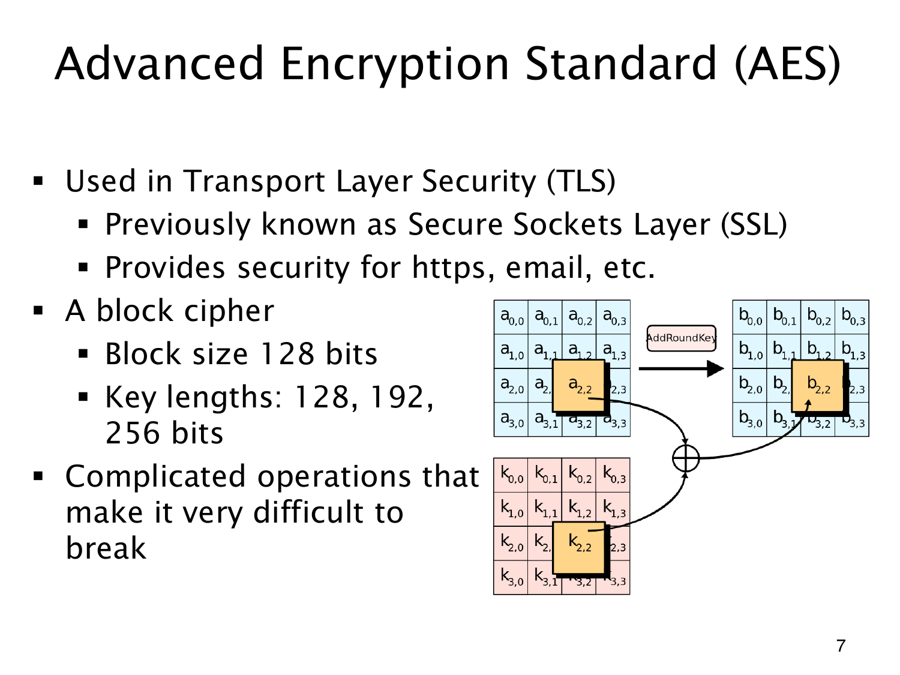

L1.14 · 第 7 页讲解原文
查看这一页课件

AES 的块长与密钥长度分开看
AES（Advanced Encryption Standard）处理的块固定为 128 bits，即 16 bytes；密钥长度则可取 128,192,256 bits。选 256 位密钥不会把块也变成 256 位。
它使用多轮变换，使输入、密钥和输出形成复杂依赖，已超出前页单一大整数仿射式的结构。图中只展示 AddRoundKey（轮密钥加）：状态与轮密钥按字节排成矩阵，对应位置异或，例如
b2,2=a2,2⊕k2,2.
异或是逐位模 2 加法，同一个密钥异或两次会还原原值。完整 AES 还包含其他轮变换，不能将图里这一步当作全部算法。
课件把 AES 放在 TLS、HTTPS 等通信背景中。TLS 是安全通信协议，AES 是协议可使用的加密算法，层次不同；SSL 是 TLS 的历史前身。这里仅介绍背景，没有展开完整协议或 AES 安全性的证明。